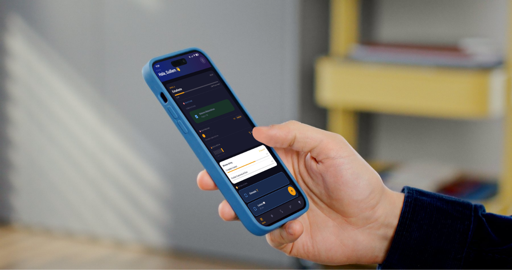
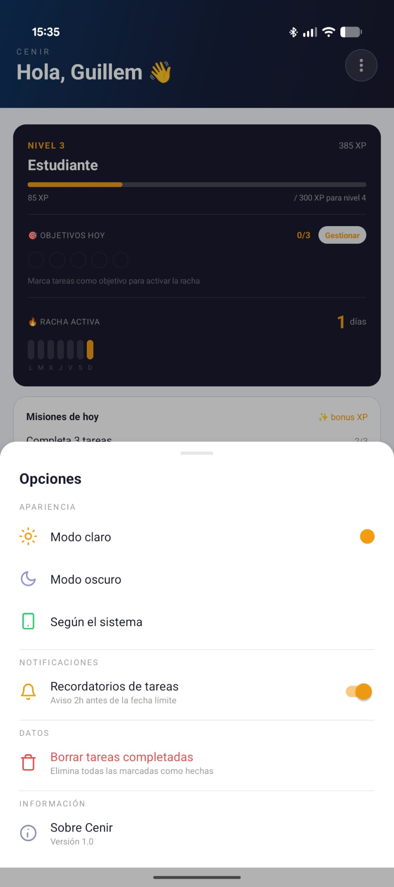
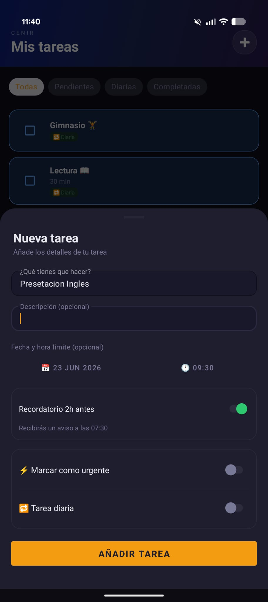
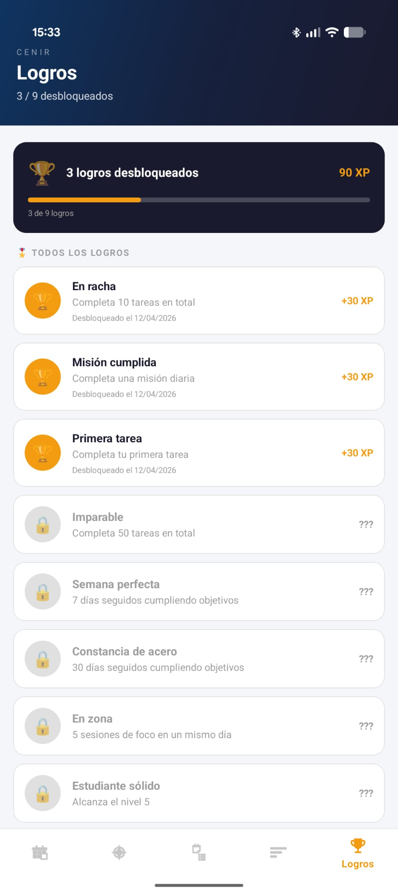
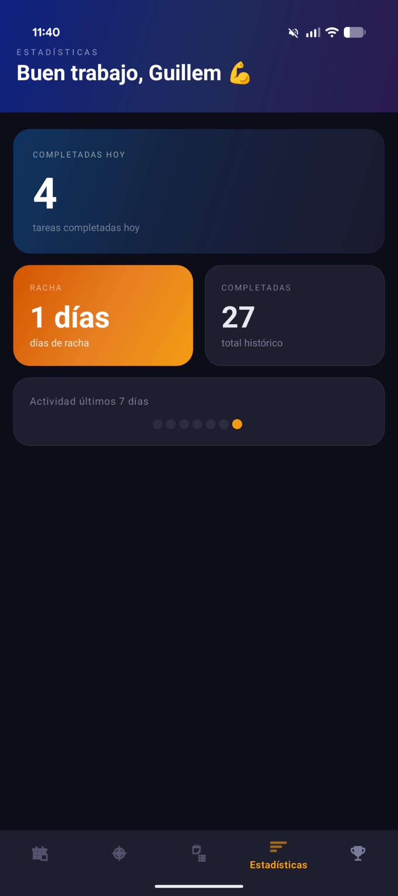

CenirApp
Aplicació de productivitat gamificada per millorar hàbits d’estudi.
El projecte
CenirApp és una aplicació mòbil de productivitat desenvolupada en Android que combina gestió de tasques amb un sistema de gamificació inspirat en videojocs.
L’objectiu del projecte és ajudar els usuaris a millorar els seus hàbits d’estudi i concentració mitjançant recompenses, nivells, reptes i estadístiques de progrés.
Aquest projecte ha estat desenvolupat com a treball personal amb l’objectiu d’aprendre desenvolupament Android modern, arquitectura de software i gestió d’estat i dades en aplicacions reals.
Sistema complet de gamificació
Integra XP, nivells, rutes diàries i assoliments per convertir la productivitat en una experiència motivadora.
Mode focus tipus Pomodoro personalitzat
Temporitzador adaptatiu amb control de sessions per millorar la concentració i els hàbits d’estudi.
Arquitectura Android robusta (MVVM)
Separació clara entre UI, lògica i dades amb Room, ViewModels i gestió d’estat reactiva.
Automatització amb notificacions intel·ligents
WorkManager per gestionar recordatoris, missions diàries i actualitzacions automàtiques del sistema.
Tecnologies
Desenvolupament:
- Kotlin
- Android SDK
Arquitectura:
- MVVM
- LiveData
- Flow
Dades:
- Room (SQLite)
Sistema:
- WorkManager
- Notifications
Screenshots
Vista real de la aplicación en ús



